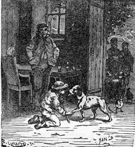
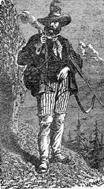
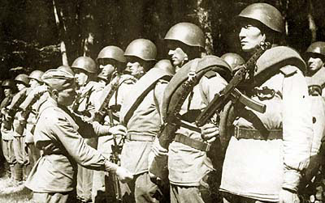

Vladimir Zimakov (2)

Vladimir Zimakov (bên phải), tháng Ba năm 1945, Budapest.
Đã tới lúc phải tiếp tục lên đường. Bốn người trong nhóm dường như đã có một kế hoạch gì đó. Họ bảo chúng tôi: “Cứ đi trước đi, chúng tớ sẽ bắt kịp các cậu sau.” Hai người chúng tôi rời căn nhà và đứng chờ họ ngoài đường, bởi chúng tôi cũng chẳng biết đi đâu nữa. Chúng tôi chờ mãi, chờ mãi nhưng các bạn tôi vẫn không thấy xuất hiện. Rồi có một anh chàng vận đôi giầy ống cao của Đức, cổ đeo một khẩu tiểu liên Đức đi tới. Anh ta hỏi:
- Này, các cậu kia, thuộc sư đoàn nào thế?
- 202.
- À, “Sư đoàn tụt hậu”! Hãy tới Sư 180 tham gia đội trinh sát của chúng tớ!
- Làm sao được? Chúng tôi là xạ thủ chống tăng cơ mà!
- Quỷ tha nó đi! Thôi bắn vào mấy cái xe tăng đi! Hãy tham gia đội trinh sát chúng tớ, chỗ chúng tớ nhiều trò vui lắm!
Đó là cách tôi tham gia trung đội trinh sát đặc biệt số 90 của Sư đoàn 180. Tôi báo cáo lên trung đội trưởng là mình tới từ trung đội chống tăng của Trung đoàn bộ binh 645, Sư đoàn 202. Anh ta hứa sẽ báo cáo lại với họ rằng tôi đã bắt đầu phục vụ trong đơn vị của anh ta kể từ giờ phút này. Thật đơn giản.
Bọn Đức đang cố chọc thủng chiến tuyến của quân ta ở vùng Pochaevcy-Shurzhency và sư đoàn 202 và 180 chúng tôi phải trải qua một thời gian khốn đốn. Nhưng chúng tôi cũng đã bắt bọn Đức phải trả giá đích đáng.
Ồ! Khi chúng tôi kết thúc chiến dịch Korsun-Schevchenkovsky, ở đấy chất đống những thây người và ngựa. Thật là một cơn ác mộng! Nhất là tại một hẻm núi. Kinh khủng! Đạn Katyusha bắn vào đấy, hai hoặc ba lần gì đó và trộn tung mọi thứ lên!
Vào mùa xuân năm 1944, bọn Đức chặn đứng đợt tấn công của chúng ta ở gần Yassy (ngày nay là Iasi). Đội trinh sát chúng tôi đã xuất hiện ở ngoại ô Yassy nhưng bọn Đức đã đẩy lui chúng tôi bằng xe tăng. Chúng lấy đâu ra những cái xe tăng ấy? Dường như chúng đã bỏ lại tất cả xe cộ ở thành phố Uman và vùng ngoại ô rồi cơ mà?! Hãy xem, ngay đường sá lầy lội cũng không chặn bước được chúng! Chúng tôi thường bị dừng lại vì bùn lầy, còn chúng thì không! Hay chúng có thêm viện binh? Dù sao đi nữa, chúng cũng đã đẩy lùi chúng tôi khoảng 15 - 25 km khỏi Yassy bằng xe tăng. Chúng tôi đã phải dừng tại đó mãi cho tới tháng Tám.

Chúng tôi thường tiến hành trinh sát mỗi ngày một cách: có hôm thì đi bộ, hôm khác lại cưỡi ngựa. Chúng tôi mặc vatnik (áo choàng lót bông vạt ngắn – Anton Kravchenko
Bọn trinh sát Đức cũng không ngốc, chúng thường bắt cóc lính ta để lấy tin tức về cách bố trí quân ta. Đám trinh sát chúng tôi học được rất nhiều từ bọn Đức. Tôi muốn nói tới cách ngụy trang, nghệ thuật chiến tranh và những mánh lới đặc biệt của chúng. Chúng là những người rất chính xác, không khi nào bắn nhiều đạn hơn cần thiết. Chỉ trừ những phát bắn trượt! Mặt khác, khi chúng xác định được vị trí tập trung quân ta, chúng không hề quan tâm tới số lượng đạn và thủ pháo. Ngay khi chúng bắt đầu nã đạn, chúng tôi phải cố gắng trườn tỏa theo mọi hướng trước khi chúng giết chết được tất cả mọi người.
Một lần chúng tôi lọt phải ổ phục kích của bọn Đức. Chúng tôi đang trườn đi như sau: một người dẫn đầu cả nhóm và hai người khác ở hai bên. Và người đầu tiên đã lọt vào ổ phục kích. Anh ta bị giết chết. Không nghĩ ngợi lâu la, chúng tôi đưa ổ phục kích đó xuống địa ngục! Ngay lập tức, chúng bắt đầu bắn đạn cối vào chúng tôi. Ôi Trời ơi! Thật là kinh khủng khi chúng bắt đầu bắn vào cùng một điểm từ mọi phía. Không trốn vào đâu được! Bạn phải tìm cho bằng được bất cứ cái lỗ nào để rúc đầu vào. Nhưng chúng tôi cũng phải cố thoát khỏi nơi ấy bằng bất cứ giá nào. Hai người của chúng tôi bị thương trong vụ ấy, nhưng chúng tôi đã vác được họ về. Chúng tôi không bao giờ bỏ những người chết và bị thương lại chiến trường.

Những người được chọn vào đội trinh sát đều là những chàng trai rất tuyệt! Tôi là một tay đụt và không thể đối phó với một thằng Đức được nên luôn được bố trí trong toán cảnh giới của nhóm trinh sát. Nhưng trong nhóm trinh sát của chúng tôi có những tay rất khá! Ví dụ như hai gã trai thuộc trung đội trinh sát của trung đoàn, Fomichev và Alexandrov. Họ là những chàng trai rất thông minh. Họ có thể đi cặp cùng nhau và bắt về một tên Đức! Đấy là cả một câu chuyện. (Trong một lần chúng tôi tiến hành trinh sát) Chúng tôi đã lặng lẽ bò được một lát, cuối cùng trông thấy hai thằng lính gác Đức đang đi tới đi lui trong chiến hào. Chốc chốc chúng dừng lại để quan sát suốt dọc chiến hào. Rồi lại tiếp tục đi. Bọn chúng có một chòi canh có bố trí đại liên. Đối lại, phía chúng tôi có Fomichev và Alexandrov, những người luôn được phân công cùng đi với chúng tôi trong những nhiệm vụ đặc biệt phức tạp. Họ bảo: “Chúng tớ sẽ lặng lẽ hạ thằng này. Cậu nào nhận nhiệm vụ hạ thằng còn lại?” Vâng, chúng tôi có những chàng trai như thế đấy. Khi bọn gác tách khỏi nhau, các chàng trai của chúng tôi sẽ hạ gục chúng trong khoảnh khắc! Hề hề! (Cười)
Artem Drabkin: Các ông có phải trải qua khóa huấn luyện nào trong thời gian rảnh rỗi không?
Khi chúng tôi đang phòng ngự, chúng tôi được gặp một huấn luyện viên, một viên trung uý vạm vỡ, khoảng 25 tuổi. Anh ấy dạy chúng tôi một số miếng võ ju-jitsu: miếng khóa, miếng đá hậu, cách quật ngã đối phương. Anh ấy cũng dạy cách sử dụng dao và cách đoạt dao khỏi tay đối phương. Ở đấy tôi cũng được học cách cưỡi ngựa: cách cưỡi, cách chém đứt một cành liễu (đây là bài tập của kỵ binh để học cách sử dụng gươm).
Trung đội chúng tôi nằm dưới sự chỉ huy của một thượng sĩ. Chúng tôi đặt cho anh ta biệt danh là Kochubey (tên một anh hùng nổi tiếng thời kỳ nội chiến Nga) do bộ râu mép ấn tượng màu lúa chín và chỏm tóc trên trán anh ta. Anh ta mặc trang phục Kazak cổ truyền và đội cái mũ kubanka (loại mũ lông tròn, không vành – Anton Kravchenko) với cái chóp đỏ. Sư đoàn trưởng thường bảo anh ta: “Sao anh cứ lượn lờ như một con gà trống vậy? Mặc ngay bộ quân phục vào. Chúng tôi không có những tay Kazak ở đây!” Nhưng Kochubey không thèm nghe lời ông ta. Rồi anh ta mất tích ở nơi nào đó và chúng tôi được nhận một chỉ huy mới, trung uý Petr Domozhir, người thành phố Nizhnưi Tagil, hiện là bạn tôi, sinh năm 1925. Anh ấy đã phục vụ ở độâi trinh sát trong suốt chiến tranh. Anh đã được tặng ba Huân chương Cờ Đỏ và một Huân chương Lênin. Anh ấy bị thương nặng trong một chuyến trinh sát và đã không quay lại đơn vị sau khi rời bệnh viện. Chúng tôi nghe nói lại rằng anh ấy được phong Ngôi sao Anh hùng Xô viết và chuyển về huấn luyện ở Maskva.
Artem Drabkin: Các ông thường vượt qua chiến tuyến bao xa?
Không xa lắm. Chúng tôi đi dọc theo chiến tuyến và lọt ra sau nó, không hơn 8 km.
Artem Drabkin: Khi đi trinh sát các ông hay sử dụng loại vũ khí gì?
Một khẩu tiểu liên và lựu đạn, loại “quả chanh” (loại F1 - LTD). Chúng tôi đem theo rất nhiều “quả chanh”: ba quả ở thắt lưng và khoảng mười quả trong balô. Và chúng tôi lấy càng nhiều đạn càng tốt. Chúng tôi phải đem theo rất nhiều đạn.
Artem Drabkin: Các ông có sử dụng dao không?
Tất nhiên, có chứ. Ban đầu tôi dùng một con dao loại thường. Nó trông thô nhưng khá sắc. Rồi trong một đợt tấn công, tôi thấy một tên Đức nằm chỏng chơ – một gã tóc đỏ to cao. Tất nhiên, viên đạn có thể bắn trúng tất cả mọi người, nó đâu thèm quan tâm tới chuyện người ấy cao hay thấp. Tôi thấy hắn có một con dao tốt và tôi cắt lấy nó cùng cái bao đựng dao khỏi cái thắt lưng của hắn. Khi ta phóng con dao ấy, mũi dao luôn hướng về phía trước. Nó sắc tới mức ta có thể dùng nó cạo râu được!
Artem Drabkin: Ông đã giết được bao nhiêu lính Đức?
Thường tôi giết chúng mà không đếm. Hãy xem, anh bắn vào hắn trong một trận đánh và thấy hắn ngã xuống. Thế nhưng làm sao anh biết được như thế là hắn đã chết hay chỉ cúi xuống ẩn nấp? Tất nhiên, đôi lần anh thấy rõ được mình đã bắn trúng hắn.
Mắt tôi tinh lắm. Khi đi trinh sát, tôi thường làm người canh chừng. “Valodka, quan sát cẩn thận nhé.” Tôi nhìn rõ ban đêm như một con mèo. Mục đích chính là phát hiện ra mìn. Sợi dây gài quả mìn căng rất thấp trên đám cỏ. Ngay khi bọn Đức bắn một quả pháo sáng, ta nên dừng lại và quan sát. Ồ, nó đấy, một sợi dây rất nhỏ, ngay phía trước mặt bạn!
Artem Drabkin: Thường bọn Đức xử sự thế nào khi các ông bắt chúng?
Chúng kháng cự lại, tất nhiên. Sức mạnh của một con người tăng gấp ba trong thời khắc nguy hiểm. Nhưng không tên Đức nào có thể thoát khỏi những anh chàng Fomichev và Alexandrov khoẻ như sói của chúng tôi! Không một ai! Không cách nào! Và vấn đề không phải ở chỗ tên Đức khoẻ như thế nào. Chúng tôi trói chúng thế nào ấy hả? Kiểu thông thường – bẻ quặt tay ra sau, nắm tóc kéo đầu ra sau lưng, cách ấy làm tên Đức bất tỉnh trong khoẳng khắc. Điều cốt yếu là giữ tay hắn cách xa khẩu súng và con dao.

Artem Drabkin: Bọn Đức có cạo trọc lính của chúng không?
Không, chúng để tóc dài bình thường, đôi khi cắt ngắn. Trên thực tế, bọn Đức là những kẻ chính xác và cẩn thận. Nhưng có đôi lần chúng tôi đã hạ được chúng một cách bất ngờ. Tôi còn nhớ chúng tôi đã nổ tung một hầm trú ẩn của chúng như thế nào. Chúng tôi tìm cách lặng lẽ tiến gần chúng. Bọn lính gác đang ngủ quên. Chúng tôi trói tay, bịt miệng chúng rồi ném cả hai qua bờ chiến hào. Rồi tay công binh của chúng tôi mở ra một lối an toàn và chúng tôi ném lựu đạn vào trong hầm. Sau đó hai người trong bọn tôi đột nhập vào hầm và nã tiểu liên dọc những cái giường tầng. Có thể còn vài thằng Đức sống sót sau đòn đó, tôi không chắc lắm. Khi chúng tôi trên đường trở về, bọn Đức bắt đầu bắn trả bằng súng cối, súng máy và phóng lựu đạn (Chúng có một loại lựu đạn có thể gắn vào nòng súng trường và phóng đi nhờ một viên đạn không có đầu. Chúng tôi cũng dùng cách đó. Quả lựu đạn bắn đi bằng cách đó có thể xa tới 50 mét). Chúng tôi chật vật mới thoát được. Lần ấy tôi bị dính một mảnh đạn vào chân. Thật may tôi lại đang mặc cái quần lót bông.
Thật ra, tôi đã bị thương ba lần và bị giập thương một lần. Dù vậy, tôi không được nhận một tờ giấy chứng thương nào, bởi tất cả các vết thương đều nhẹ và trong trung đội có tay cứu thương riêng chữa trị cho chúng tôi. Cậu ấy tới từ Osetia (thuộc vùng Caucasus) tên là Sasha Gevorkov, nếu tôi nhớ không lầm. Cậu ấy cũng kiêm nhiệm vụ phiên dịch, bởi cậu ta rất giỏi tiếng Đức. Cậu ấy chữa trị cho chúng tôi. Vết thương đầu tiên tôi bị ở chân. Các bạn tôi cắt và vứt bỏ chiếc ủng cao cổ. Sasha lấy mảnh đạn ra khỏi chân và rửa sạch vết thương bằng cồn rivanol. Cậu ta bảo: “Valodka, hãy ra canh lũ ngựa (bởi đó là một công việc nhẹ nhàng). Cậu cứ đi lại như thế trong vài tuần và vết thương sẽ tự khỏi.” Rồi tôi bị trúng một viên đạn vào xương gót chân. Nó xé toạc bàn chân, xuyên qua da thịt và dừng lại ở xương. Cậu ấy nói: “Nếu nó đau dữ dội thì có nghĩa là xương bị gãy. Tớ đã lấy viên đạn ra. Trong trường hợp chân bị mưng mủ, tớ sẽ phẫu thuật và rửa sạch cho cậu.” Nhưng mọi chuyện kết thúc tốt đẹp, vết thương đã tự lành như một vết muỗi đốt (nguyên văn: “như một vết thương của chó“ - LTD).
Rồi cậu ấy bị giết. Chúng tôi trở về chiến hào phe mình sau một lần trinh sát. Sasha đâu rồi? Viên chỉ huy nói: “Hai người các cậu đi đưa cậu ta về.” Lúc ấy bọn Đức đã ngưng bắn. Khi được đồng đội đưa về, cậu ta đã chết. Lúc đầu chúng tôi không tìm được vị trí vết thương. Rồi có ai đó cởi thắt lưng cậu ta và cả một khối máu ộc ra từ dưới áo sơmi. Hóa ra một mảnh lựu đạn đã cắt đứt động mạch dưới nách cậu ấy. Chúng tôi rất thương tiếc bởi cậu ta là một tay rất tốt, sinh năm 1920.

Tôi nhớ rất rõ một chuyến trinh sát trước khi mở màn đợt tấn công. Chúng tôi đã đi tới hai lần. Nỗ lực đầu tiên của chúng tôi thất bại, nhưng lần thứ hai thì thành công. Chuyện này xảy ra khoảng ngày 15 - 16 tháng Tám, ở gần thành phố Yassy. Khi chúng tôi đi lần đầu tiên, trung đội trưởng của chúng tôi rất sợ. Anh ta không dám dẫn chúng tôi đi xa và chúng tôi quay về khi đang lọt giữa các sư đoàn bọn Đức. Dù vậy anh ta báo cáo là chúng tôi đã đi tới đây, tới kia vào lúc này, lúc này (dù chúng tôi không hề làm vậy). Anh ta báo cáo là tất cả các mục tiêu đều bị canh gác cẩn thận. Tất nhiên, anh ta bị cách chức và bị đưa tới một nơi nào đấy không rõ. Đó là một trường hợp tồi tệ. Tất cả các trường hợp như vậy đều bị xử lý bởi SMERSH. Sau đợt trinh sát thất bại ấy bọn Đức canh chừng thận trọng hơn. Chúng canh gác mọi địa điểm nằm giữa các sư đoàn của chúng bằng các đội tuần tra và các ổ phục kích. Thật là một cái bẫy chằng chịt khó qua lọt! Chúng tôi được lên kế hoạch đổ bộ bằng đường không. Thế rồi một lính trinh sát của trung đoàn báo lại rằng anh ta đã tìm ra một vị trí từ đó chúng tôi có thể băng qua chiến tuyến.
Đội trinh sát chúng tôi có 16 người. Bốn người trong bọn đang tham gia một chiến dịch khác. Thế là đội chỉ còn lại 12 người. Vâng, Fomichev và Alexandrov của chúng tôi diệt tên gác, ném lựu đạn và nhờ thế xoá sạch cả trung đội trong sở chỉ huy địch. Họ nhét tất cả các tài liệu quan trọng vào balô, khống chế tên tướng Đức, vác hắn trên vai và mang tất cả những thứ đó chuồn đi. A ha, anh xem, chúng tôi đã chơi cho chúng một vố thế nào! Bọn Đức bắt đầu lùng sục từ những làng xung quanh đấy. Chúng tôi rời ngôi làng (nơi đặt sở chỉ huy Đức) và chạy vòng vòng quanh một cánh đồng ngô. Trung đội trưởng của chúng tôi là một tay rất khôn ngoan. Anh ta đưa chúng tôi một loại bột ngụy trang để xoa lên quần áo và giày ủng. Sau khi xoa bột, chúng tôi quay ngược lại dọc theo cánh đồng, nằm lì ở đó trong suốt ba ngày. Chúng tôi không được ăn uống cũng như hút thuốc. Anh bạn ạ, trời lúc đó nóng khủng khiếp! Chúng tôi rất khát, dù có đem theo một chút nước. Và chúng tôi phải tiểu tiện tại ngay chỗ nằm. Người ta chịu đựng được trong những hoàn cảnh như thế chỉ khi còn đang tuổi thanh xuân. Nếu chúng tôi rời khỏi chỗ đó, chúng tôi có thể bị bắt ở một nơi nào khác. Cuối cùng ba ngày trôi qua và người chỉ huy dẫn chúng tôi quay lại đúng ngay nơi mà chúng tôi đã xuất phát xuyên qua phòng tuyến. Đáng lẽ chúng tôi nên quay lại chếch về bên trái hay bên phải chỗ ấy một chút thì hơn. Bọn Đức đang đợi chúng tôi ở ngay chỗ ấy. Người sĩ quan chỉ huy ra lệnh cho tôi và Fedorenko: “Các cậu hãy tiến lên, còn chúng tôi sẽ chặn bọn Đức lại trong chốc lát.” Họ đưa cho chúng tôi cái balô đựng giấy tờ tài liệu. Tên tướng phải ở lại với họ. Dù sao thì chúng tôi làm thế nào để đưa hắn về được? Còn họ đã làm gì hắn ấy à? Họ đâm hắn chết, tôi đoán thế. Trong bọn tôi có tay Pavljuk, hắn chẳng quan tâm tới việc hắn đang cắt cổ ai – một con gà mái hay một con người, huống hồ là một tên Đức. Vâng, cả hai chúng tôi đều sống sót. Pavel bị thương ở tay và chân trên đường về chiến hào của ta. Tôi không biết được điều gì đã xảy ra với những chàng trai còn lại. Sau đó tôi không gặp lại bất cứ ai trong bọn họ nữa. Người ta bảo là Fomichev và Alexandrov đã quay lại được đơn vị và tôi tin như vậy, bởi họ là những tay cáo già, lanh lợi thông minh và không bao giờ mất bình tĩnh. Nhưng kể từ đó tôi không có dịp gặp lại họ, bởi tôi đã chuyển lên phục vụ tại sở chỉ huy sư đoàn, mà họ lại thuộc trung đoàn đang tiến phía trước chúng tôi. Đấy thật là một chiến dịch thành công, bởi chúng tôi đã mang được về một khối lượng khổng lồ tài liệu quan trọng ngay trước khi đợt tấn công bắt đầu.
Khi các chiến sĩ của ta tiến công, Pavlik và tôi được lệnh đi áp giải bọn tù binh Đức. Chúng tôi áp giải chúng về hậu phương, khoảng 70 tên một lần. Chúng bước đi và tuân lệnh ngoan ngoãn như một lũ bê non. Chúng tôi thường dừng lại ở một ngôi làng và mọi người cho chúng tôi (tôi, Pavlik và bọn tù binh) thức ăn. Không tên tù binh nào có thể thoát khỏi tay tôi. Vâng, trừ có một lần. Tôi suýt nữa bị đưa vào tiểu đoàn trừng giới vì vụ đó. Đó là khi tôi đang phục vụ trong đơn vị thuộc sở chỉ huy. Một hôm tôi và Pavlik được lệnh cùng đi, nhưng rồi cậu ta lại bị chuyển đi làm chuyện khác.
Chỉ huy đơn vị trinh sát bảo tôi: “Zimakov, cậu phải áp giải bốn tên tù binh tới sở chỉ huy của quân đoàn. Chúng là những tên rất nguy hiểm – có Trời mới cứu được cậu nếu cậu để chúng trốn thoát!” Lúc đó là mùa thu và trời đã về chiều. Viên sĩ quan chỉ đường cho tôi. Tôi có thể dẫn chúng đi dọc con đường ôtô dài 15 km hoặc theo một con đường mòn dài khoảng 7 tới 8 km. Tôi chọn cách sau. Vâng, lúc đó tôi nghĩ: đây là khẩu tiểu liên, chúng sẽ không thoát khỏi tay mình. Thêm nữa, tôi lại đang cưỡi ngựa. Chúng thì đã bị lục soát, hoàn toàn không có vũ khí. Tay chân chúng được tự do, không bị trói.
Vâng, tôi đã áp giải chúng như thế và rồi chúng tôi đi qua một cánh đồng trồng hướng dương. Anh biết không, ở chỗ đó người ta trồng những cây hoa hướng dương rất cao! Và thình lình một tên tù binh quay lại bắn vào tôi bằng một khẩu súng ngắn! Ơn Chúa là con ngựa của tôi lại chồm lên ngay khi hắn quay lại. Tôi bắn lại hắn bằng khẩu tiểu liên. Đám tù binh còn lại chạy tán loạn theo mọi hướng: một tên bên trái và hai tên còn lại về bên phải. Tôi bắn và hạ ngục tên bên trái. Rồi tôi bắn vào hai tên còn lại. Thân cây hoa thì cao, đầu bọn chúng nhấp nhô giữa cánh đồng. Trời đang tối dần. Tôi nghĩ rằng mình nên cưỡi ngựa dọc theo dấu vết của chúng. Tên đã nổ súng nằm chết thẳng cẳng và tên chạy về bên trái cũng đã ngoẻo. Hắn không chạy được bao xa. Tôi tiến tới trước. Rồi tôi tìm thấy tên thứ ba. Tôi xuống ngựa để lục túi hắn. Hắn đã chết. Người còn ấm nhưng ngoẻo rồi. Tôi tiếp tục tiến, tay gò cương ngựa. Khẩu tiểu liên đeo trên cổ, sẵn sàng nhả đạn. (Loại tiểu liên Shpagin PPSh của ta rất nặng và có băng đạn hình đĩa cứ đập vào lưng khi đeo. Tôi thường khoác khẩu tiểu liên Đức cho tới khi điều đó bị cấm. Nhưng lính ta luôn sử dụng khẩu ấy trong khi trinh sát bởi chúng không bao giờ bị kẹt đạn. Khẩu PPS cũng là một khẩu súng tốt, nhẹ và dễ sử dụng.)

Tù binh Đức ở gần Minsk, 1944.
Trở lại câu chuyện, tôi tiếp tục đi theo dấu vết và bất ngờ nghe tiếng ai đó hét lên với tôi “Đứng lại!”
- “Tôi đang đứng đây,” Tôi trả lời nhưng tay vẫn giữ trên khẩu súng.
- “Anh là ai?!”
- “Tôi đang áp giải tù binh. Đã hạ gục được hai tên và thêm một tên nữa đang nằm sau tôi. Một tên trong bọn chúng bắn vào tôi, nhưng con ngựa đã cứu tôi thoát.”
- “Chúng tôi vừa tìm thấy một tên trong cánh đồng khoai tây, hắn đang cố nấp bằng cách nằm ẩn vào các luống khoai.”
Đó là những người thuộc đơn vị cảnh vệ đối nội. Họ đem tên Đức bị thương đi và đưa tôi một tờ giấy trong có ghi rằng tôi đã buộc phải thanh toán bọn tù binh. Các đơn vị cảnh vệ đối nội (“zagradotrjad”) là những lực lượng đặc biệt trực thuộc Dân ủy Nhân dân thuộc Cục Đối nội (từ 1935 tới 1945, sau đó được đổi tên – Anton Kravchenko
Có lần chúng tôi ăn trộm của một bà nông dân. Vụ đó xảy ra tại Ukraina. Bếp ăn bị tụt lại phía sau và chúng tôi đang rất đói. Mà cụ bà ấy lại kể: “Các con ạ, ta có một con ngựa non rất tốt mới hai tuổi. Bọn Đức đã lấy đi của ta nhưng Hồng quân đã trả nó lại.” “Thế con ngựa đang ở đâu?” “Ở đây, trong chuồng ngựa.” Đêm hôm đó hai gã ăn trộm trong bọn tôi trộm lấy con ngựa, dắt nó ra khỏi làng, bắn chết và đem nấu thịt. Bà già khóc quá chừng! Vâng, chúng tôi đã cho bà con ngựa khác khi rời cái làng đó.
Rốt cục tôi cũng không bị trừng phạt vì bốn tên tù binh đó. Tôi quay về sở chỉ huy sư đoàn và đưa cho họ tờ giấy.
-Tại sao anh không theo dõi bọn tù binh cẩn thận hơn?!
-Thế tại sao các anh lại giao cho tôi những tên như thế?! (Tại sao lại không kiểm tra xem chúng có mang vũ khí không, nhất là khi các anh biết rằng chúng nguy hiểm đến vậy?) Các anh đáng lẽ phải cho hai người đi áp tải chúng chứ! May cho tôi là con ngựa đã lồng lên, nếu không thì chúng đã khử tôi và trốn mất rồi.
- Dù sao anh để chúng trốn cũng là quá tệ rồi! - Anh ta cau mày.
Ngày 20 tháng Tám chúng tôi chọc thủng mặt trận của bọn Đức và tiếp tục tiến công. Toàn đội trinh sát hành quân phía trước sư đoàn khoảng 30 km. Đấy là khi Romania đầu hàng. Tôi cần nói rằng người Romania căm ghét bọn Đức. Người Hungaria thích bọn Đức, nhưng người Romania thì không, cũng giống người Nga chúng ta. Người Romania nghèo, rất nghèo. Gần Budapest chúng tôi tiến hành một đợt trinh sát cùng với sư đoàn trưởng. Trên đường đi chúng tôi bị một toán Ju-87 ném bom. Đấy là lúc tôi bị thương lần cuối cùng. Tôi được điều trị trong một bệnh viện nằm cạnh một tu viện gần thành phố Kiskunfelegyhaza.
Ba tuần sau, chúng tôi được tập trung vào một trung đội và gửi tới ngoại ô Budapest. Thành phố đang bị bao vây. Chúng tôi thuộc một lữ đoàn đột kích đặc biệt. Chúng tôi chỉ được giao cho pháo, đại liên và súng máy, thế thôi. Và chúng tôi thường được gửi tới những điểm yếu nhất trong vòng vây bao quanh Budapest. Khi viện binh tới nơi, chúng tôi lại di chuyển tới một vị trí khác, rồi lại một nơi khác nữa, cứ thế. Tới tháng Ba bọn Đức tiến hành một nỗ lực để thoát khỏi Budapest qua hệ thống cống ngầm dưới lòng thành phố. Lính Đức tiến lên như thác đổ. Chúng tiến tới mà không nổ súng, nhưng chúng tôi vẫn bắn vào chúng. Rồi chúng bắt đầu ném vũ khí xuống đất. Tôi không biết chính xác nhưng con số lính Đức bị giết rất lớn. Chúng tôi được nghỉ ngơi rồi tiếp tục tiến quân. Chúng tôi đã thấy nhiều giàn thiêu xác lính Đức trong một khu rừng, cứ năm cái gom lại trên một giàn. Có rất nhiều trận đánh nảy lửa diễn ra tại Budapest, không một căn nhà nào còn nguyên vẹn trong thành phố. Hầu hết đều bị hủy diệt! Khi chúng tôi nghỉ lại ở Pest (phần nằm bên kia sông Budo của thành phố Budapest – LTD.) chúng tôi được thấy toàn cảnh thành phố – toàn là đổ nát! Tất cả! Như trong một cơn ác mộng. Tóc dựng đứng trên đầu, có phải là do chúng tôi đấy không? Đúng, chúng tôi đã làm vậy, bởi bọn Đức đã chống lại. Rồi tôi gặp một người bạn thuộc đội trinh sát pháo binh. Anh ta nói:
- Đội trinh sát các cậu đã bị giết dưới lòng thành phố, trong hệ thống cống ngầm. Sư đoàn trưởng ra lệnh cho họ chiếm lấy một ngôi nhà và họ đâm đầu vào bọn Đức. Họ quét sạch bọn Đức nhưng cũng hi sinh hết.
- Tất cả mọi người sao?
- Đúng, kể cả những người lính trong đội đột kích nữa.
Trên dãy Alps lính ta đã bắt được một lượng lớn lính Đức đang định trốn sang đầu hàng quân Đồng minh. Thật kỳ quái! Chúng tôi lục soát người những tên Đức ấy trong suốt một tuần lễ! Nán lại và lục soát chúng! Chúng tôi lấy tất cả vũ khí và đồ quý, mỗi tên lính Đức chỉ được giữ lại một chiếc nhẫn vàng. Rồi tới lượt chúng tôi bị quân ta lục soát.
Artem Drabkin: Ông có gửi bưu phẩm về nhà không?
- Tôi có gửi về một gói từ thành phố Galatz (nay là Galati). Nó chứa một chiếc đồng hồ nữ và một cái dây chuyền. Tôi cũng gửi về một chuỗi đá màu. Tôi đã tìm được nó, có thể nói như thế. Không thứ nào trong số đó được nhận cả (bởi gia đình tôi). Tới gần Viên, tôi mắc bệnh sốt rét và phải vào bệnh viện. Đúng lúc đấy chiến tranh chấm dứt.
Artem Drabkin: Điều gì là tệ nhất ngoài mặt trận?
- Tìm cách sống sót sau một trận ném bom. Ta sẽ không bao giờ biết được nó nổ chỗ nào. Anh có thể núp vào một chiến hào nào đó, nhưng một quả bom đã nhắm trúng anh và thế là tất cả tay chân ruột gan anh văng tung tóe khắp nơi. Chúng tôi bị ném bom rất nhiều lần. Chủ yếu do chúng luôn chọn lúc máy bay ta vắng mặt. Anh sẽ nghĩ: “Máy bay của ta đâu rồi? Bị hạ hết rồi sao?” Và trong lúc đó lũ máy bay Đức đang bổ nhào xuống ném bom, ném bom, hết đợt này đến đợt khác. Mặt đất rung chuyển! Chúng làm như vậy từ 10 tới 15 phút rồi bỏ đi. Vâng, máy bay ta cũng làm chúng nhức đầu y như vậy. Khi tôi tới trạm quan sát của quân ta, tôi trông thấy các máy bay cường kích mặt đất của ta bổ nhào và bắn rốc két trúng ngay vào chiến hào bọn Đức. Một thứ khủng khiếp nữa là những tiếng nổ, thứ mà người ta gọi là “Vanusha”, loại súng cối sáu nòng của Đức! Khi chúng bắt đầu rít lên, tất cả mọi người đều biết điều gì sắp xảy ra và vội nấp thật sâu vào các chiến hào.
Artem Drabkin: Các ông tắm rửa và giặt giũ bằng cách nào?
- Không, tôi nhớ không lần nào chúng tôi đi tắm vào mùa đông. Vào mùa hè thì có, mùa hè chúng tôi có tắm rửa. Chúng tôi tắm hơi. Tôi nhớ lại có lần chúng tôi dừng chân bên bờ một con sông có tên là Zhizha (nghĩa là “Bùn loãng” – Anton Kravchenko
Artem Drabkin: Ngoài mặt trận có khi nào ông bị ốm không?
- Có chứ, đôi lúc, nhưng rất ít. Người ta thường bị cảm hết lần này đến lần khác. Một người ốm nằm trên giường mất ba hay bốn ngày và rồi lại xuất hiện bình thường. Cứu thương đôi khi tới hỏi: “Ở đây có ai bị ốm không?” Thế thôi. Khi anh còn trẻ thì anh luôn luôn khỏe mạnh.
Artem Drabkin: Khẩu phần các ông gồm có gì?
Artem Drabkin: Lúc còn ở đơn vị cũ ông có được cấp ống ngắm cho súng chống tăng không?
Không. Thật ra, những loại súng ấy không hiệu quả lắm khi bắn ở tầm xa. Nó hiệu quả khi bắn trong khoảng cách từ 200 tới 300 mét, thậm chí có thể tới 500 mét. Anh có thể trông rõ chiếc xe tăng: anh nổ súng và khoét vào nó một cái lỗ! Nhưng nếu ở khoảng cách xa hơn thì viên đạn không xuyên thủng được vỏ thép xe tăng.
Artem Drabkin: Ở ngoài mặt trận ông có tin vào bùa chú không?
- Tôi không biết nữa. Vài người có đeo bùa, còn tôi thì không. Nhưng những lúc đang căng thẳng quyết liệt thì tôi lẩm nhẩm trong đầu, “Lạy Chúa hãy phù hộ con! Lạy Chúa hãy cứu con!” Thế đấy!
Phỏng vấn: Artem Drabkin-Anton Kravchenko Dịch từ Nga sang Anh: Anton Kravchenko Chỉnh sửa bản tiếng Anh: Claire Fuller Martin Dịch từ Anh sang Việt: Lý Thế Dân